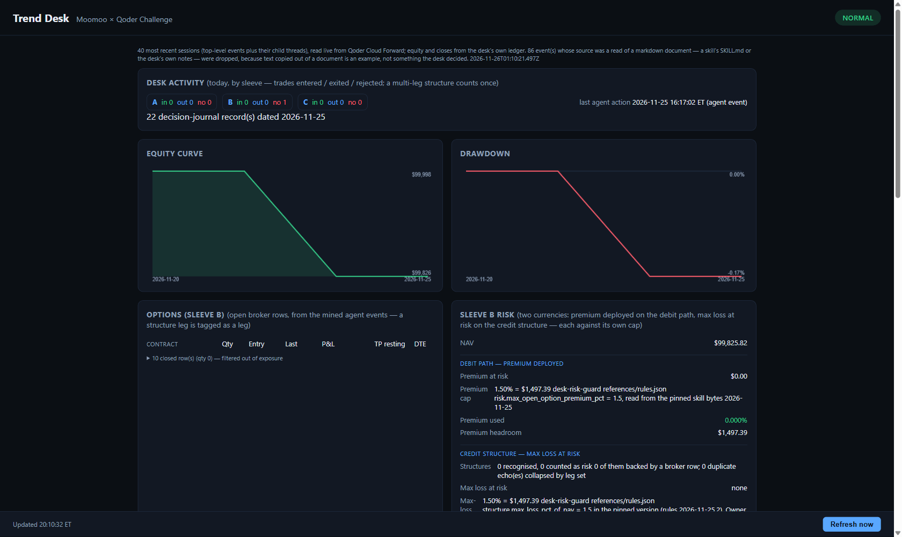

Paper account 5830104 · $100,000 NAV · trading window 17–28 Nov 2026 · eleven cron schedules, zero manual steps between a signal and an order.
Eight pages, generated with Qoder. The archive beside it is the runnable agent package: dashboard app, the six skills as pinned in the cloud, the replay engine with its recorded outputs, the decision journal, and the fills/order/equity logs.
| Figure | Value | Source inside the package |
|---|---|---|
| Live NAV, cumulative P&L | $99,825.82 / −$172.29 | logs/equity.csv, logs/closes.csv |
| Desk trades in the window | 1 entry, 1 close | logs/fills.csv orders 3401709 / 3401916 — the close's own log text is “SCAN 12:30 close stop breach SQQQ” |
| 25 Nov | 4 refusal records, 0 orders | logs/decisions.jsonl — two distinct refusals recorded four times: one account-identity, three copies of one iron-fly size rounds to zero verdict |
| Live sessions | 7 trading days | by_day keys of evidence/credits-census.json |
| Credit spend | 779.96 / 694.06 cr | 150 desk sessions and 118 scheduled runs, same census, read 26 Nov |
| Replay sample | 106 sessions | 65 of 81 candidate sessions in backtest/intraday/replay_out.json — the other 16 are dropped because the bar timeline shared by the six instruments does not start at the 09:35 open, so they have no opening range — plus 41 in backtest/contest-window/, no overlap |
| Pooled result | +$1,137.91 · avg R +0.015 · t +0.17 · fees $209.21 | per-trade R columns of both replay outputs; recomputable, not a summary field |
| By market state | 2018-01 t +2.83 · 2022-04 t +0.13 · 2016-08 t −2.07 · 2020-03 no trades | replay_out.json → groups / as_run by month |
| Cloud configuration | 4 templates · 11 schedules · 6 skills | evidence/cloud-census-2026-11-26.json (read-only API census) |
Every figure above is recomputed from the file named beside it. Where a number is as-run rather than optimal — the strategy's own sizing, the guard's own caps, the broker's own fills — it is labelled as-run.
| Criterion | What to look at |
|---|---|
| Risk-adjusted return (25%) | Live book is one round trip and −0.172% peak-to-trough — offered as a bound, not a result. The weight sits on the replay across 2016 / 2018 / 2020 / 2022 / 2026, with its t-statistics and its losing block on the slide. |
| Qoder & Qoder Cloud Agent usage (30%) | Four Forward templates (coordinator → researcher / executor / risk_auditor), six pinned skills, 11 cron schedules (4 firing straight at the executor), a live dashboard, and 779.96 credits of recorded agent work. docs/submission/system-overview.md. |
| Strategy & risk design (30%) | Three sleeves with written invalidation; every order passes guard.py before it exists; live-money and crypto order tools are always_deny in configuration, not in a prompt. skills/desk-risk-guard/ + backtest/mounted/rules.json. |
| Reusability & documentation (15%) | 33 dated decision memos including the ones that were reverted, an append-only journal, a read-only config snapshot, and a per-file SHA-256 manifest proving the backtest ran the bytes the desk runs. |
Captured 26 Nov 03:44 ET (US market closed) from logs/ as the desk recorded them. The dashboard runs locally against your own token; publishing it is not required by the rules.

cd app && npm install && cp .env.example .env, paste your own PAT into .env, npm start → http://localhost:4173.PACKAGE-README.md maps every deck figure to the file that produces it; docs/submission/trading-journal.md §4 is the backtest method and result tables..env is excluded and .env.example carries an empty QODER_PAT=. All trading is paper-only: the live-order tool family is denied by configuration on every template.max_loss is the backstop.b568a07afd432906cd39ca1aae89df13ab08fe5a2375b95bf2200e5d4da250e4 · cloud census read 2026-11-26T08:46Z · credit census read 2026-11-26T09:11Z ·
built with Qoder Desktop and Qoder Cloud Agents (Forward), against the moomoo MCP on paper account 5830104.